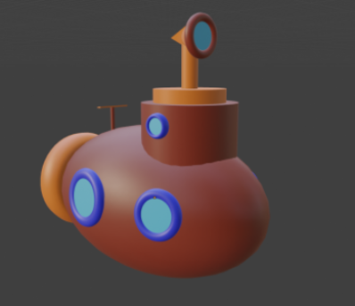
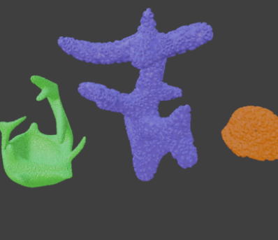
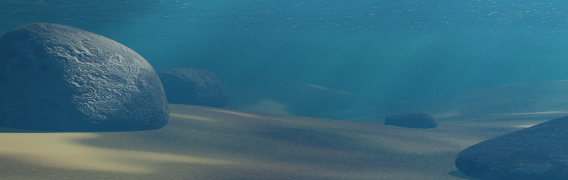

Blender



Musik
Coupe von The Grand Affair
Video
Cantina Band von John Williams & London Symphony Orchestra
Meine Arbeiten


Coupe von The Grand Affair
Cantina Band von John Williams & London Symphony Orchestra